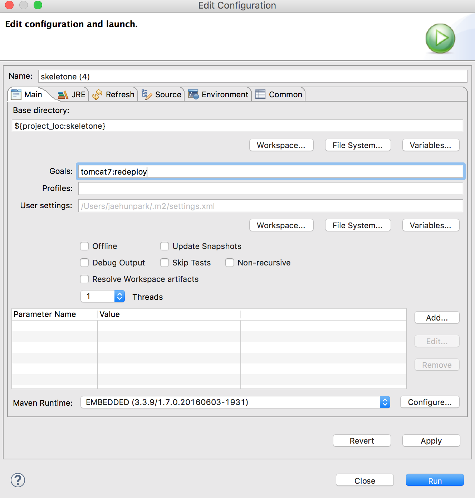
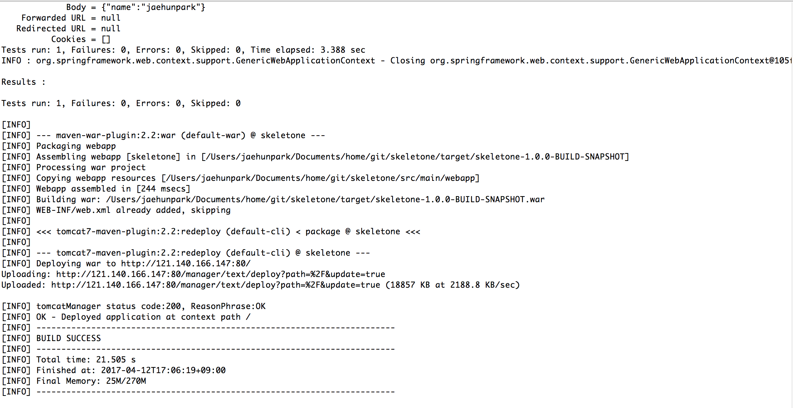
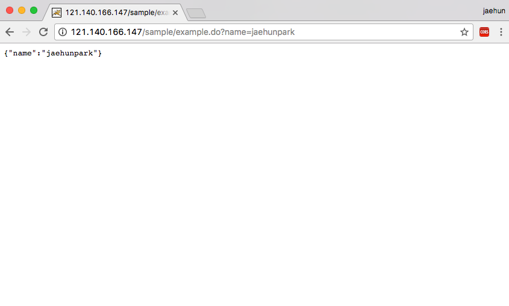

maven을 활용한 remote 서버 배포
maven을 활용하여 로컬 개발환경 eclipse 또는 STS 환경에서 에서 remote로 원격배포가 가능하다.
이런 경우는 대게 보안적으로 크게 신경쓰지않는 프로젝트나, 어떠한 이유에 의해서 jenkins와 같은 third party 배포 프레임웍을 사용하지않거나, 또는 팀단위가 아닌 개인이 간단하게 개발된것을 수시로 배포해야하는 상황이라면 적합하다고 생각한다.
maven 설치
먼저 배포하기에앞서, 시스템에 maven이 설치되어있어야한다.
maven을 설치해보자 apache 에서 쉽게 받을수있다.
3.5.0 버전이 최신버전임을 확인할수있다.( 저번주까지 3.3.9 버전이었는데 .. )
다운을 받았다면 이제 시스템에 환경변수를 등록하자.
필자는 OSX 를 사용하기에, 계정레벨 환경변수에 등록했다
|
|
|
|
환경변수를 적용하였다면 maven 버전을 확인해보자
maven 버전이 확인이된다면 정상적으로 설치가 된것이다.
remote 서버 인증정보 설정
로컬 환경에서 원격 서버로 자유롭게 배포하기위해선, 원격서버에서 배포자의 인증정보가 존재해야한다.
tomcat의 디렉토리에서
|
|
를 입력하면 인증정보설정이 끝난것이다. 간단하지않은가 ?
이밖에도 여러 옵션이있지만,
- manager-gui — Access to the HTML interface.
- manager-status — Access to the “Server Status” page only.
- manager-script — Access to the tools-friendly plain text interface that is described in this document, and to the “Server Status” page.
- manager-jmx — Access to JMX proxy interface and to the “Server Status” page.
원격서버로 배포하는것이 목적이므로 manager-script 권한만 설정하도록한다.
자세한 정보는 tomcat manager doc에 아주 자세히나와있다 …
배포하기
이제 모든 준비는 끝났다. 로컬 개발머신에서, 배포하고자하는 프로젝트를 build 하기만하면된다.
배포하고자 하는 프로젝트의 maven pom.xml에 플러그인을 추가한다
프로젝트 배포 최상의 경로 이름지정 http://remote서버ip:포트/manager/text
필자는 프로젝트 배포를 / 를 최상위로 설정하였다.
다음으로 프로젝트 우클릭 -> Run As -> Maven build

Goals에 tomcat7:redeploy -> Run

maven이 빌드를 시작하게되고 unit test 까지 마친후 , 최종적으로 BUILD SUCCESS가 떨어졌다.
이제 원격서버에 제대로 반영이 되었는지 확인해보자

필자는 page 대신 rest 기반을 프로젝트를 구성하였기에 api호출시 정상적으로 동작하는것을 확인할수있다.
견해
필자는 원격서버 tomcat 버전이 7.XX을 사용하므로, tomcat7:redeploy 라는 명령을 사용하였으나,원격서버의 tomcat 버전이 8.XX 인경우에도 무방한것으로 확인된다.
보안이 중요하지않은 프로젝트는 없겠지만, 개인이 간단히 테스트용으로 개발결과물을 빠르게 올리기에는 최고의 방법인것 같다.